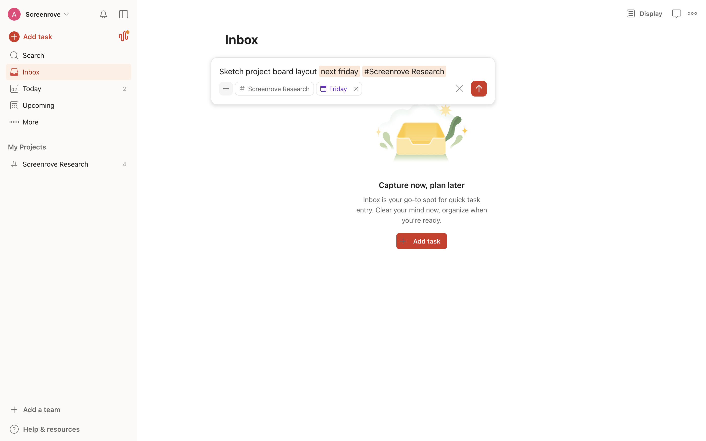
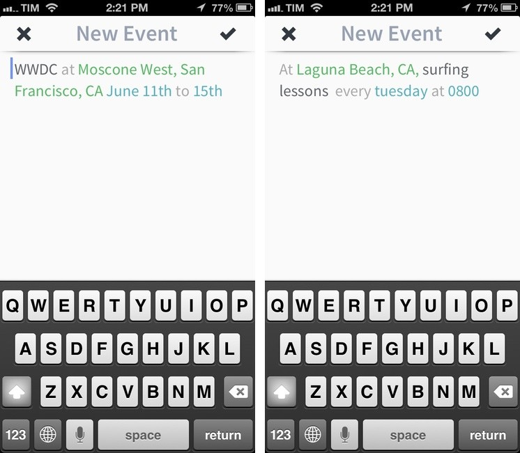

Replace the tab/arrow Start + Duration widgets with one plain-text sentence.
Parser detects start time, duration, and tags across flexible forms
(1h, 1 h, 1 hour, 30 minutes, 14:00, 9:00 am, #meeting).
Logging Team Sync #meeting at 9:00 am for 1 h
Chen 1:1 at 14:00 for 30 minutes
Quiet multi-color annotation in the sentence itself — not a second form under the input. Sources: Todoist Quick Add (Screenrove capture), Horizon Calendar 2.0 (MacStories review).

#project highlighted in the same text field.
Chips below are optional mirrors — recognition happens in-sentence.
screenrove.com
·
Todoist help
